Empire Stone × Empire Granite — QA
Test Case เฉพาะจุดที่แก้ — รอบ Feedback จากการทดสอบ (WIP 16 ต.ค.)
อัปเดตล่าสุด: 19 ตุลาคม 2569 (2026-10-19) · ระบบ stone_slab_inventory เวอร์ชัน 19.0.2.109.34 · รันจริงบน eg-tst (บริษัท Empire Granite) ทุกเคส พร้อมภาพหน้าจอจริง
ชุดเคสนี้ตรวจเฉพาะสิ่งที่เราแก้หลังลูกค้าทดสอบเมื่อ 16 ต.ค. ตามที่สรุปไว้ในหน้า "ประเด็นนำเสนอและหารือกับลูกค้า" ส่วนบนสุด (7 เรื่อง) ทุกเคสเป็นเส้นทางปกติ ผู้ใช้ทั่วไปทำตามเองได้ ไม่รวมเคสกรอกผิด รายการที่ยังรอข้อมูลลูกค้าอยู่ท้ายหน้า
12Test Case ทั้งหมด
4หมวด
10High Priority
2Medium Priority
0Low Priority
สิ่งที่พบระหว่างรันจริงรอบนี้ (ควรรู้ก่อนสาธิต)
- ค่าแรงต่อ ตร.ม. ลงบัญชีเฉพาะใบตัดที่ผูก Sale Order หรือกรอก Project (No SO) ใบตัดที่ไม่ผูกอะไรเลยไม่มีรายการค่าแรง และไม่มีข้อความเตือน — TC-W16-10
- Slab แบบ Serial รับเป็น 1 แถวต่อ 1 แผ่น (ไม่ใช่ 1 แถวต่อขนาด) ใบรับของไม่มีแถวว่างซ้ำ และปริมาณไม่เกินที่สั่ง — TC-W16-03, 06
- % สูญเสียจากการเลื่อยของ Empire Granite บน eg-tst ตั้งเป็น 0 (บริษัทอื่นเป็น 15) จึงตัดได้ 60 แผ่น ไม่ใช่ 51 แผ่นเหมือนเอกสาร Golden Path เดิม
A. ใบสั่งซื้อ (PO) และใบรับของ Slab
ช่อง ตร.ม. กับ จำนวนแผ่นแยกกัน · รับ Slab หลายขนาดในใบเดียว · เลือกตู้ Container ที่หัว PO · 5 test cases
| TC ID | Scenario | Precondition | Steps | ข้อมูลตัวอย่าง | Expected Result | Priority | ภาพหน้าจอ |
|---|---|---|---|---|---|---|---|
| TC-W16-01 | PO Slab: กรอก ตร.ม. แล้วจำนวนแผ่นต้องไม่เปลี่ยนตาม ตอนพิมพ์ชื่อสินค้า อย่ากดบรรทัด "Create ..." ใน dropdown เพราะจะสร้างสินค้าซ้ำ · ถ้ายังไม่กรอก ตร.ม. เอง ระบบยังประมาณให้ = จำนวนแผ่น × ขนาดมาตรฐาน |
เข้าระบบเป็น Empire Granite · มีผู้ขายและสินค้า Slab "GP Block Marble - Slab (Honed, 3 cm)" |
|
Vendor = UI-TEST Slab Import vendor Price / Sq.M = 1,200 Qty (Sq.M) = 214.43 |
Qty (Sq.M) = 214.4300 · Quantity (จำนวนแผ่น) ยังเป็น 1.0000 ไม่เด้งตาม · ยอดบรรทัด 257,316.00 บาท (214.43 × 1,200) · VAT 7% 18,012.12 · รวม 275,328.12 บาท | High | 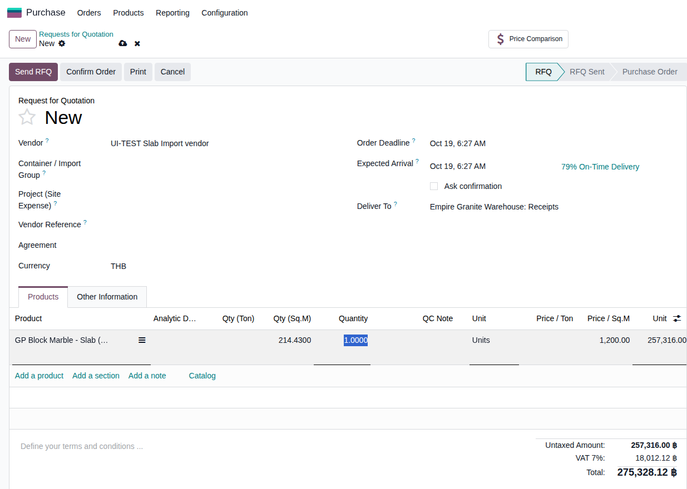 |
| TC-W16-02 | PO Slab: กรอกจำนวนแผ่นที่รับจริง แล้ว ตร.ม. ต้องไม่ถูกเขียนทับ ราคาต่อแผ่น (Unit Price) จะเปลี่ยนเป็น 8,041.125 เพราะยอดรวมคงเดิมแล้วหารด้วยจำนวนแผ่น — เป็นเรื่องปกติ ไม่ใช่ราคาที่ตกลงกับผู้ขาย · PO ที่เปิดไว้ก่อนหน้านี้ไม่ถูกแก้ |
ทำ TC-W16-01 เสร็จแล้ว (ยังอยู่หน้า PO เดิม) |
|
Quantity = 32 | Quantity = 32.0000 · Qty (Sq.M) ยังเป็น 214.4300 ไม่ถูกเขียนทับ · ยอดบรรทัดยัง 257,316.00 บาท · หลัง Confirm มีปุ่ม Receipt 1 ใบ ที่ขอรับ 32 แผ่น (ตัวอย่างจริง P00485 → EG01/IN/00590) | High | 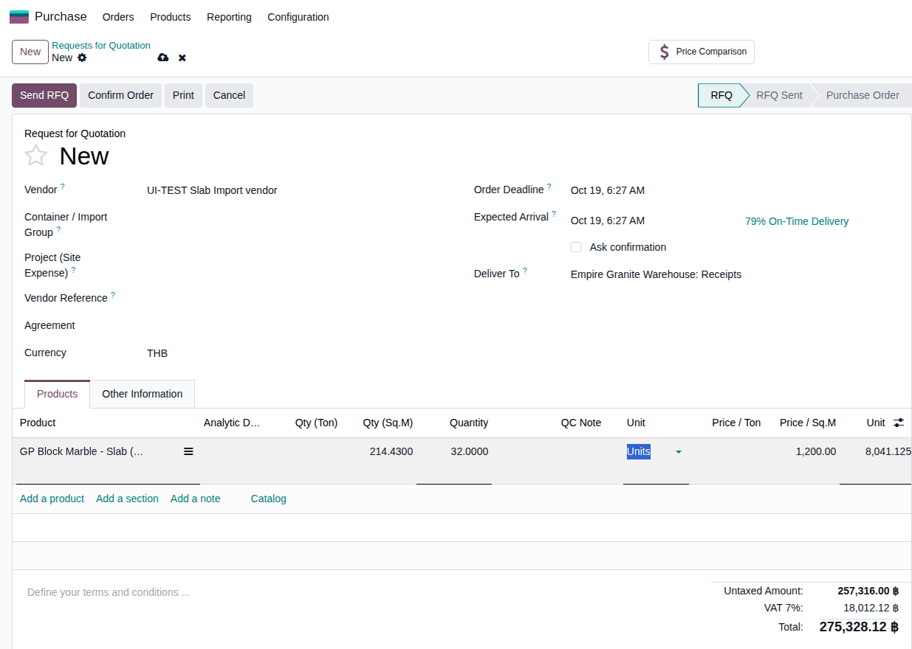 |
| TC-W16-03 | รับ Slab หลายขนาดในใบรับของเดียว แล้ว Validate Slab เป็นแบบ Serial: ระบบแยก 1 แถว = 1 แผ่น (ไม่ใช่ 1 แถวต่อขนาด) ใบรับของจึงมี 5 แถว แถวละ 1 แผ่น ตรงตามจำนวนที่รับ ไม่มีแถวว่างซ้ำ · ถ้ากรอกแต่ ตร.ม. ที่ PO ใบรับของจะรอแค่ 1 แผ่น ต้องกรอกจำนวนแผ่นด้วย |
มี PO Slab ที่ Confirm แล้ว (สั่ง 5 แผ่น กรอกจำนวนแผ่น 5 ไว้ที่ PO) |
|
PO = 5 แผ่น, 14 ตร.ม., 1,000 บาท/ตร.ม. แผ่น 1-3 = 1.60 × 2.80 × 0.03 แผ่น 4-5 = 1.50 × 2.70 × 0.03 |
ใบรับของเป็น Done (EG01/IN/00591) มี 5 แถว แถวละ Demand 1.00 / Quantity 1.00 · ไม่มีแถวว่างหรือแถวซ้ำ · ที่ PO ช่อง Received = 5.00 ตรงกับที่สั่ง ไม่เกิน · ได้ Slab 5 แผ่น (SLB-26-0286 ถึง 0290) ขนาดตรงที่กรอก | High | 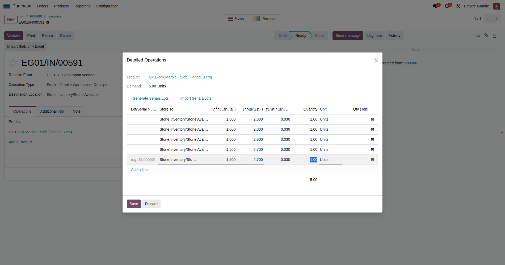 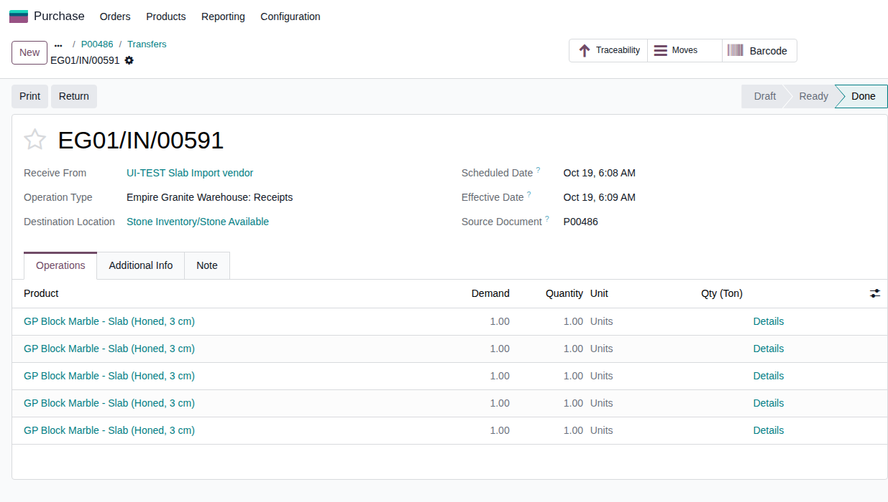 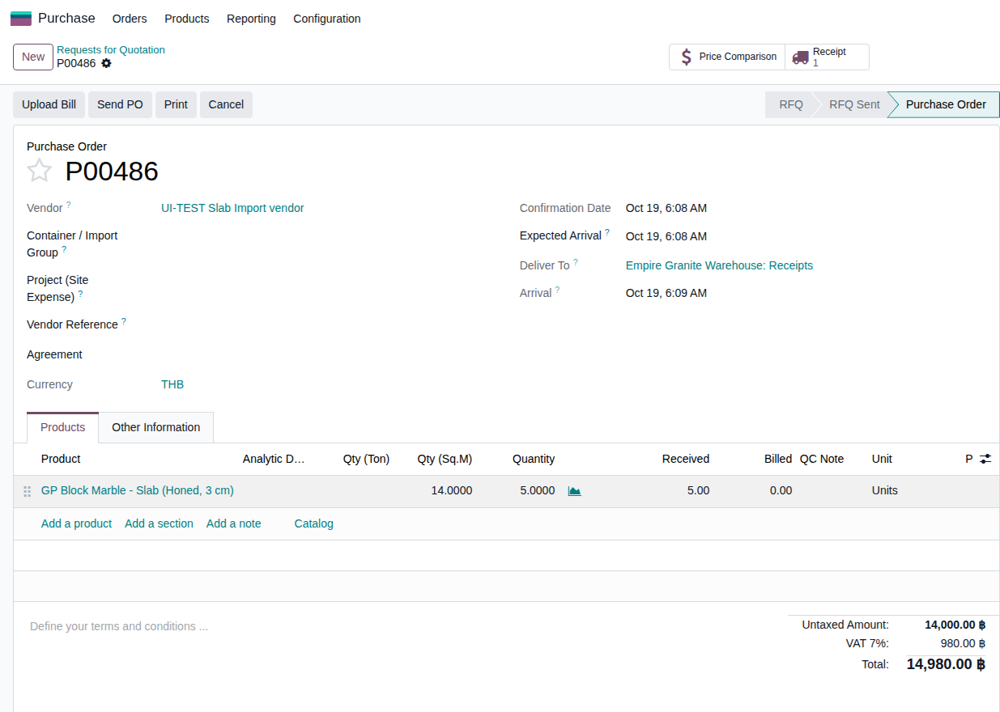 |
| TC-W16-04 | PO ค่าใช้จ่ายนำเข้า: เลือกตู้ที่หัว PO ครั้งเดียว บรรทัด Slab/Block ไม่ถูกใส่ analytic ของตู้ (กันนับต้นทุนซ้ำ เพราะต้นทุนหินนับที่ฝั่งขายอยู่แล้ว) · เวอร์ชันนี้ 1 PO = 1 ตู้ · แก้ analytic รายบรรทัดเองได้เสมอ |
มี Container (ตัวอย่าง E3978 และ E2222) ในระบบแล้ว |
|
Container = E3978 บรรทัด 1: ค่าขนส่งระหว่างประเทศ (Freight) 50,000 บรรทัด 2: ค่าอากรนำเข้า (Duty) 30,000 บรรทัด 3: GP Block Marble Slab 10 ตร.ม. × 1,000 |
บรรทัดค่าขนส่งและค่าอากร มี analytic E3978 เองโดยไม่ต้องใส่ทีละบรรทัด · บรรทัด Slab ไม่มี analytic · ยอดก่อน VAT 90,000.00 บาท (ตัวอย่างจริง P00487) | High | 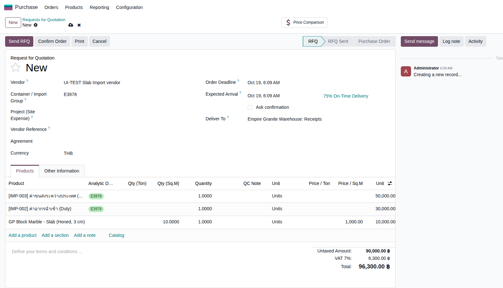 |
| TC-W16-05 | เปลี่ยนตู้ที่หัว PO แล้วแท็กย้ายตาม และบรรทัดที่เพิ่มทีหลังก็ได้แท็ก | ทำ TC-W16-04 เสร็จแล้ว (ยังอยู่หน้า PO เดิม) |
|
Container เปลี่ยนเป็น E2222 บรรทัดใหม่: ค่าขนส่งในประเทศ 2,000 |
บรรทัดค่าขนส่งและค่าอากรเปลี่ยน analytic จาก E3978 เป็น E2222 ตามทันที · บรรทัด Slab ยังไม่มี analytic · บรรทัดค่าขนส่งในประเทศที่เพิ่มทีหลังได้ analytic E2222 เอง (ตัวอย่างจริง P00487) | Medium | 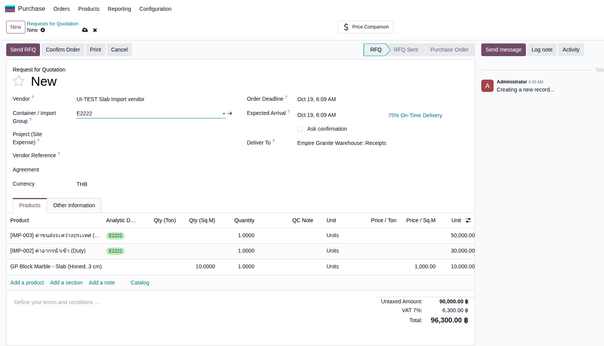 |
B. นำเข้าขนาด Slab จาก Excel
แทนการกรอกทีละแถวในใบรับของ · 1 test case
| TC ID | Scenario | Precondition | Steps | ข้อมูลตัวอย่าง | Expected Result | Priority | ภาพหน้าจอ |
|---|---|---|---|---|---|---|---|
| TC-W16-06 | ดาวน์โหลด template กรอกขนาดเป็น ซม. อัปโหลด ตรวจไฟล์ ยืนยันนำเข้า แล้ว Validate ขนาดกรอกเป็น เซนติเมตร ระบบแปลงเป็นเมตรเอง (160 ซม. = 1.600 ม.) · สินค้าเลือกจาก dropdown ในไฟล์เท่านั้น · ไฟล์ตัวอย่างที่ใช้รอบนี้: slab-import-example.xlsx · ยังไม่รองรับการอ่าน Packing List ของ supplier โดยตรง |
มี PO Slab ที่ Confirm แล้ว และใบรับของที่ยังไม่ Validate (ตัวอย่าง PO สั่ง 4 แผ่น) |
|
แถว 1: GP Block Marble Slab (Honed, 3 cm) 160 × 280 × 3 ซม. จำนวน 2 ชิ้น แถว 2: ตัวเดิม 150 × 270 × 3 ซม. จำนวน 2 ชิ้น |
ตัวอย่างหลัง "ตรวจไฟล์": "4 แผ่น, 17.06 ตร.ม. (PO สั่ง 4 แผ่น)" (8.960 + 8.100 ตร.ม.) · หลัง "ยืนยันนำเข้า" มีข้อความ "สร้าง 4 แถวในใบรับของ" และ Details มี 4 แถวขนาด 1.600 × 2.800 × 0.030 (2 แถว) และ 1.500 × 2.700 × 0.030 (2 แถว) · หลัง Validate ใบรับของ Done (EG01/IN/00592) ได้ Slab 4 แผ่น SLB-26-0291 ถึง 0294 ขนาดตรงไฟล์ (ตัวอย่างจริง P00488) | High | 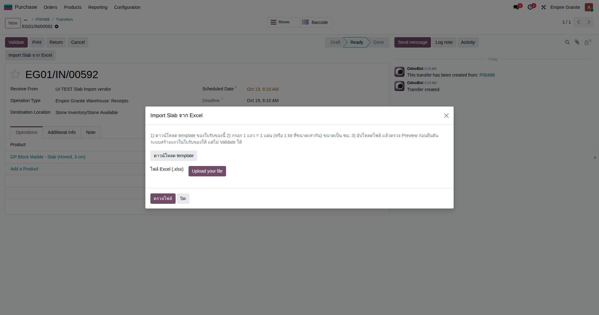 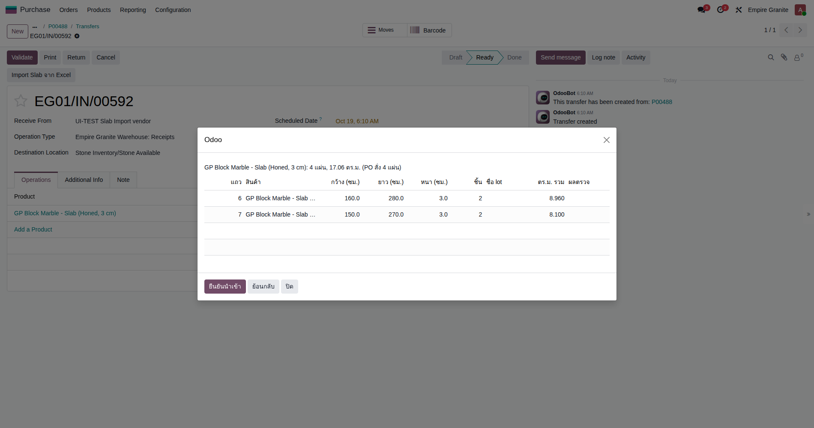 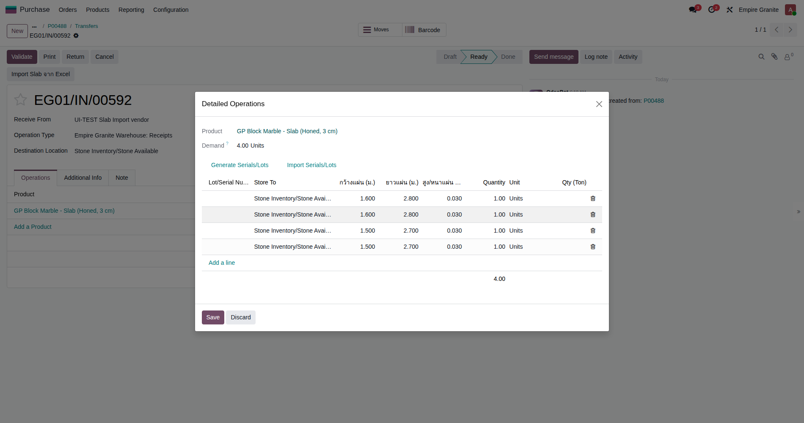 |
C. Dashboard และผิวสินค้าสำเร็จรูป (FG)
เห็น FG ที่รับเข้าคลัง · เลือกผิว (Finish) ได้ในสินค้า FG · 3 test cases
| TC ID | Scenario | Precondition | Steps | ข้อมูลตัวอย่าง | Expected Result | Priority | ภาพหน้าจอ |
|---|---|---|---|---|---|---|---|
| TC-W16-07 | Dashboard: ช่อง Finished Goods มีบรรทัด "ในสต็อก N รายการ" ช่องนี้เดิมนับเฉพาะ "ใบสั่งผลิตที่เสร็จใน 30 วัน" จึงไม่นับ FG ที่รับเข้าตรงๆ · ตัวเลขจะต่างจากนี้ตามสต็อกจริงของแต่ละวัน |
มี FG อยู่ในสต็อก (ทั้งที่ผลิตเองและรับเข้าตรงๆ) |
|
- | ช่อง Finished Goods มีป้าย "ในสต็อก 23 รายการ (3 สินค้า)" · กดแล้วเปิดรายการสต็อก FG 23 แถว (เจดีย์บัว, GP Block Marble ฯลฯ) พร้อม Location Lot และจำนวน | High | 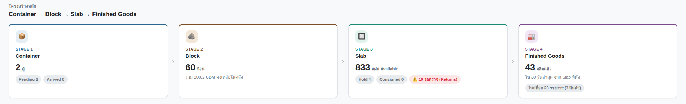 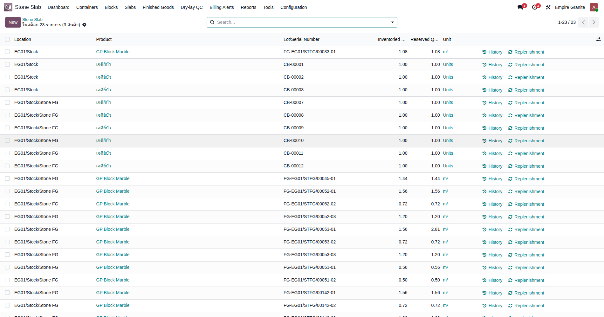 |
| TC-W16-08 | สินค้า FG มีตัวเลือกผิว (Finish) ตั้งผิวให้ FG แล้ว 48 จาก 53 รายการ · ยังเหลือ 5 รายการที่รอข้อมูลลูกค้า (Q-GREY, GP Block Marble, Custom Product 01, ซุ้มบัว, เจดีย์บัว) จึงไม่อยู่ในเคสนี้ |
- |
|
สินค้า = ดำไทย/THAI BLACK | มีแถว Finish พร้อมค่า Polished, Honed, Brushed, Sandblasted, Water Blasted, Flame Blasted, Flame and Brushed (หินแกรนิตมีผิวเปลวไฟเพิ่ม) | High | 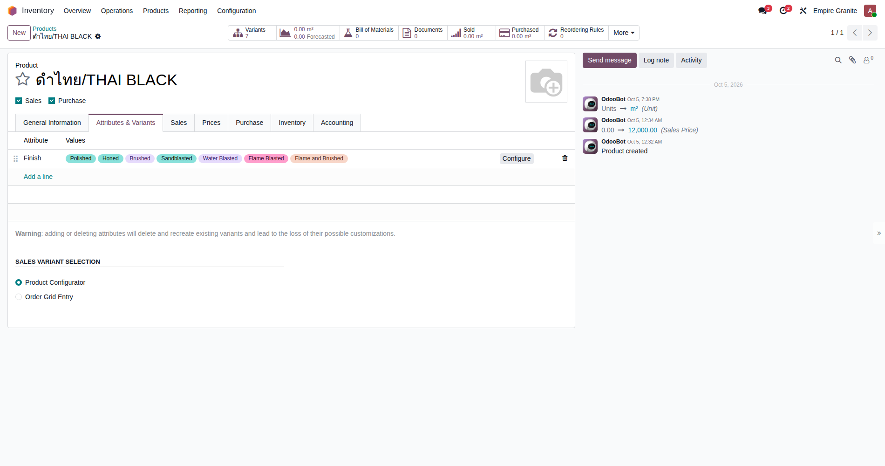 |
| TC-W16-09 | ใบเสนอราคา: เลือกสินค้า FG แล้วเลือกผิวได้ | ทำ TC-W16-08 เสร็จแล้ว |
|
ลูกค้า = A-test-customer Finish = Honed |
ขึ้นหน้าต่างให้เลือก Finish ครบ 7 ผิว · เลือก Honed แล้วบรรทัดสินค้าเป็น "ดำไทย/THAI BLACK (Honed)" ราคา 12,000.00 บาท/ตร.ม. | Medium | 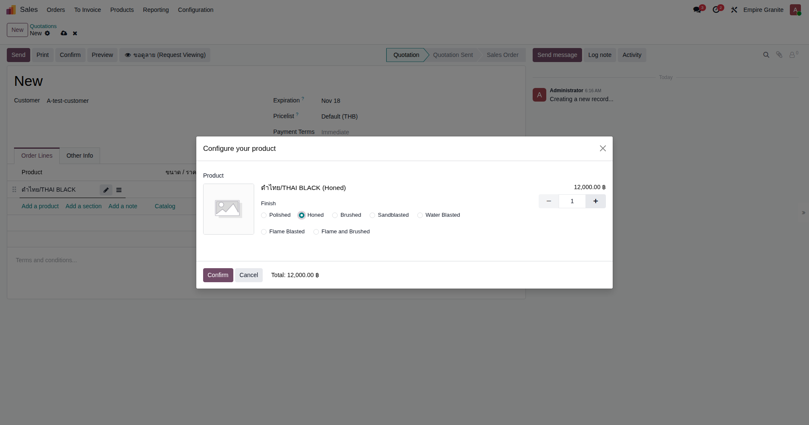 |
D. ต้นทุนใบสั่งงานและบัญชีสต็อก Block / Slab
ค่าแรงคิดเป็นบาทต่อ ตร.ม. · Block กับ Slab แยกบัญชีสต็อก · 3 test cases
| TC ID | Scenario | Precondition | Steps | ข้อมูลตัวอย่าง | Expected Result | Priority | ภาพหน้าจอ |
|---|---|---|---|---|---|---|---|
| TC-W16-10 | ค่าแรงใบตัด = ผลรวมอัตราบาทต่อ ตร.ม. ของสถานี × ตร.ม. ที่ตัดได้ ⚠ ค่าแรงจะลงบัญชีก็ต่อเมื่อใบตัดผูกกับ Sale Order หรือกรอกช่อง "Project (No SO)" ไม่เช่นนั้นระบบข้ามไปเงียบๆ ไม่มีรายการและไม่มีข้อความเตือน (ใบตัด EG01/STCUT/00336 ที่ไม่ผูก Project ไม่มีรายการค่าแรง) — เอกสารอัปเดตยังไม่ได้บอกเงื่อนไขนี้ · อัตราในตัวอย่าง (Gangsaw 100, Move-to-Station 20) เป็นค่าทดสอบ ไม่ใช่อัตราจริง · % สูญเสียจากการเลื่อยของ Empire Granite บน eg-tst ตั้งเป็น 0 จึงได้ 60 แผ่น |
Work Center Gangsaw และ Move-to-Station ตั้ง Cost per Sq.M (Output) ไว้แล้ว · มี Block ใหม่ในคลัง (ตัวอย่าง BLK-26-0785 ขนาด 2.50 × 1.20 × 0.90 ม.) |
|
Gangsaw = 100 บาท/ตร.ม. Move-to-Station = 20 บาท/ตร.ม. Block = BLK-26-0785, Finish = Polished, เหตุผล = งานเพิ่ม, Project = UI-TEST Cut Labour |
ใบตัด EG01/STCUT/00337 ตัดได้ 60 แผ่น (135.00 ตร.ม.) · รายการ MISC/2026/10/0039 "Stone Cutting Labor — EG01/STCUT/00337" เดบิต 511120 COGS - FG Production (Fabrication) / เครดิต 212300 Accrued Expenses 16,200.00 บาท = (100 + 20) × 135 ตร.ม. · แท็ก analytic ที่บรรทัดเดบิตเป็น Project ที่เลือก | High | 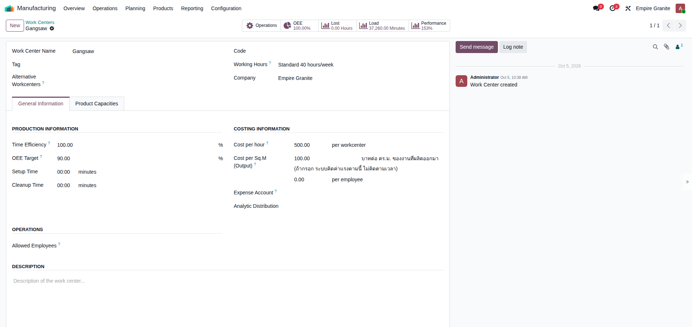 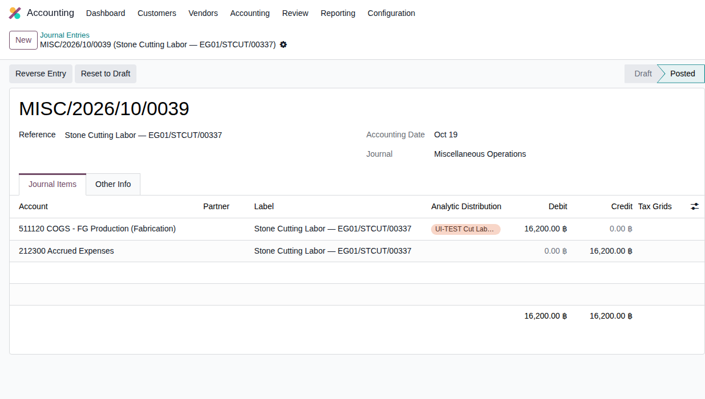 |
| TC-W16-11 | สินค้า Block อยู่หมวด "Stone - Block" Block ที่รับไว้ก่อนการเปลี่ยนนี้ยังบันทึกอยู่บัญชีเดิม ไม่ได้ย้ายมูลค่าย้อนหลัง · ถ้าผังบัญชีฉบับสมบูรณ์เปลี่ยนเลขบัญชี แก้ที่หมวดเท่านั้น |
- |
|
สินค้า = ดำชานตง/SHANDONG BLACK - Block | Category = Stone - Block (สินค้า Block ทุกตัว 50 รายการบน eg-tst อยู่หมวดนี้) · Slab อยู่หมวด "Stone" | High | 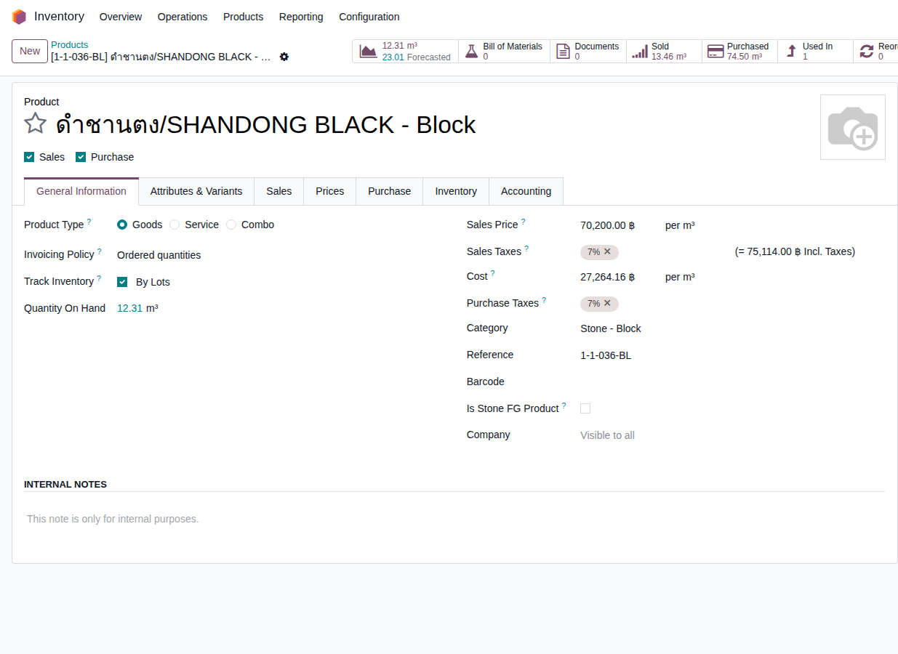 |
| TC-W16-12 | ตัด Block เป็น Slab แล้วมูลค่าย้ายจากบัญชี Block ไปบัญชี Slab เพื่อให้นักบัญชียืนยัน (คำถาม Q2) · ใบตัดมีรายการ Inventory Valuation 2 ใบ ใบที่ 2 (STJ/2026/10/0172) เดบิต/เครดิตบัญชี Slab 113120 เท่ากัน เป็นการปรับระหว่างขั้นตอน ไม่กระทบยอดรวม |
ทำ TC-W16-10 เสร็จแล้ว (Block BLK-26-0785 ซื้อ 7.29 ตัน × 10,000 = 73,000 บาท) |
|
ใบตัด = EG01/STCUT/00337 | STJ/2026/10/0171: เครดิต 113110 Inventory - Stone Blocks (Raw) 73,000.00 / เดบิต 113120 Inventory - Stone Slabs (Ready-Made) 73,000.00 · 73,000 = 7.3 ตัน × 10,000 บาท | High | 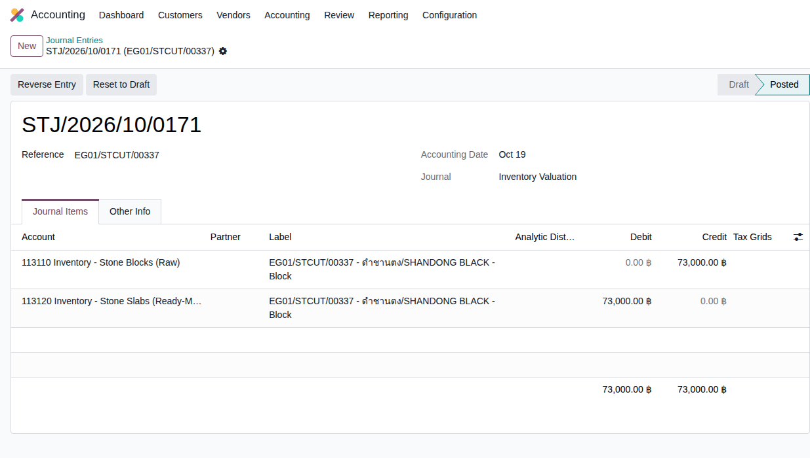 |